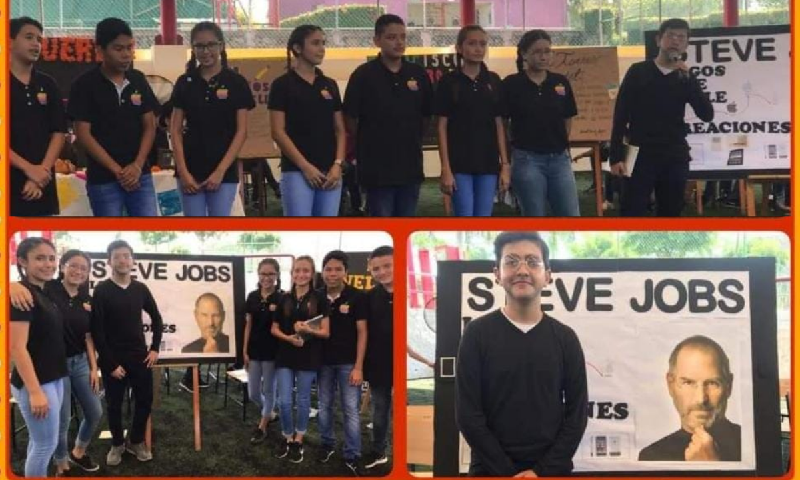

STEVE JOBS
Este proyecto constaba de hablar sobre la historia de una persona, ya muerta, pero que hubiera aportado grandes cosas a la sociedad. En mi caso, a mí, me toco exponer sobre Steve Jobs, cofundador de Apple. Cabe destacar que este proyecto era en equipos y uno de mis compañeros se caracterizó como el personaje (Steve Jobs) para hacer la exposición más interesante y atractiva. El proceso fue muy estresante pero el resultado valió la pena.
